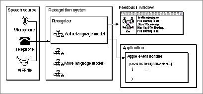

About the Speech Recognition Manager
The Speech Recognition Manager provides speech recognition services for Macintosh computers. Speech recognition is the process of listening to and recognizing spoken utterances. The main functional parts of the Speech Recognition Manager and its connection to your application are illustrated in Figure 1-1 on page 1-6.The Speech Recognition Manager is part of the PlainTalk software package. PlainTalk is a collection of operating system software that enables Macintosh computers to speak written text and to respond to spoken commands. The PlainTalk package includes the Speech Recognition Manager and the Speech Synthesis Manager.
Figure 1-1 The parts of the Speech Recognition Manager
- Note
- The Speech Synthesis Manager was formerly called the Speech Manager. Its name has been changed to distinguish it from the Speech Recognition Manager and to describe its operation more clearly.

To use the Speech Recognition Manager, you must first open a recognition system that defines certain global characteristics of the speech recognition process. Typically, you create a recognition system when your application starts up and later close it when your application exits. A recognition system determines, for example, whether the feedback window is displayed. (See "Feedback Services" on page 1-12 for information about the feedback window.)
You define the words and phrases you want to listen for by creating a language model. For example, if you wanted to allow the user to select an animal from among ten whose pictures are displayed in a window, you could build a language model containing ten phrases, the names of those ten animals. Your application can create several language models and set one of them as the active language model. This is useful if the words or phrases for which you are listening can change according to context (for instance, according to what's displayed in a window). Similarly, your application can create language models that contain other language models, and you can change parts of language models dynamically according to context.
Your language model is associated with a recognizer, which performs the work of recognizing utterances and reporting its results to your application. A recognizer communicates with your application by sending it a recognition notification, which specifies the event that prompted the notification and other information about that event. For example, when a recognizer recognizes an utterance described in your active language model, the recognizer informs your application that it has recognized something by sending it a recognition notification that contains a recognition result describing the recognized utterance.
You can receive recognition notifications in one of two ways. By default, the Speech Recognition Manager sends recognition notifications to your application's Apple event handler. If your application already handles Apple events, you simply need to add code to handle the events in the Apple event speech suite. If you're not writing an application and your code cannot receive Apple events, you can instruct the Speech Recognition Manager to send recognition notifications to an application-defined speech recognition callback routine.
Your application can inspect a recognition result to determine what was said and how to react to that utterance. In the example described earlier, where the user can utter an animal's name, you might respond by playing a recorded sound from that animal or by displaying its name. A recognition result contains the text of the recognized utterance together with other information that makes it easy for your application to interpret the result. (See "Recognition Result Properties" on page 1-46 for a complete description of the information contained in a recognition result.)
You can use the Speech Recognition Manager to recognize continuous speech from any human speaker, subject to these limitations:
- The Speech Recognition Manager is supported only on PowerPC-based Macintosh computers.
- The Speech Recognition Manager is designed to recognize speech from adult speakers of North American English. It doesn't work well for children, and it isn't yet localized for other regions.
- The Speech Recognition Manager works best with language models that are relatively small. You can obtain maximum recognition accuracy by limiting the active language model to a few distinct words or phrases at any one time. The current system can recognize a few dozen phrases fairly well.
Subtopics
- Speech Objects
- Language Models
- Feedback Services